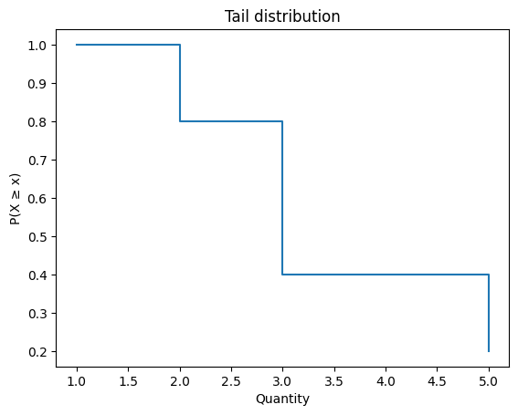
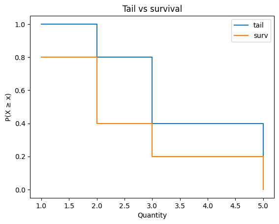

Implementing tail distributions#
This notebook outlines the API for TailDist objects in the empiricaldist library.
A TailDist represents the tail distribution P(X ≥ x). It is similar to a survival function, but a Surv object represents P(X > x). The difference matters when a distribution has point masses, as empirical distributions often do.
Click here to run this notebook on Colab.
try:
import empiricaldist
except ImportError:
!pip install empiricaldist
import numpy as np
import pandas as pd
import matplotlib.pyplot as plt
import inspect
def psource(obj):
"""Prints the source code for a given object.
obj: function or method object
"""
print(inspect.getsource(obj))
Tail vs survival#
For a discrete distribution with sorted support qᵢ:
Tail: T(qᵢ) = P(X ≥ qᵢ)
Survival: S(qᵢ) = P(X > qᵢ)
At each support point, T(x) = S(x) + P(X = x). Equivalently, S(qᵢ) = T(qᵢ₊₁), with S at the last support point equal to 0.
We’ll use this sequence as a running example:
t = [1, 2, 2, 3, 5]
from empiricaldist import Pmf, Surv, TailDist
pmf = Pmf.from_seq(t)
surv = Surv.from_seq(t)
tail = TailDist.from_seq(t)
The PMF gives the probability of each quantity:
pmf
| probs | |
|---|---|
| 1 | 0.2 |
| 2 | 0.4 |
| 3 | 0.2 |
| 5 | 0.2 |
The survival function gives P(X > x):
surv
| probs | |
|---|---|
| 1 | 0.8 |
| 2 | 0.4 |
| 3 | 0.2 |
| 5 | 0.0 |
The tail distribution gives P(X ≥ x):
tail
| probs | |
|---|---|
| 1 | 1.0 |
| 2 | 0.8 |
| 3 | 0.4 |
| 5 | 0.2 |
Notice that the tail at each support point includes the point mass at that quantity. For example, P(X ≥ 5) = 0.2 because all of the probability at 5 is included.
Constructor#
The TailDist class inherits its constructor from pd.Series.
You can build a tail distribution from a PMF by adding the survival function and the PMF, then wrapping the result in a TailDist:
ps = pmf.make_surv() + pmf
tail2 = TailDist(ps)
tail2.normalize()
tail2.iloc[0] = 1.0
tail2
| probs | |
|---|---|
| 1 | 1.0 |
| 2 | 0.8 |
| 3 | 0.4 |
| 5 | 0.2 |
Or use from_seq, which does this for you:
psource(TailDist.from_seq)
@staticmethod
def from_seq(seq, normalize=True, sort=True, **kwargs):
"""Make a TailDist from a sequence of values.
Args:
seq: iterable
normalize: whether to normalize the TailDist, default True
sort: whether to sort quantities, default True
kwargs: passed to the TailDist constructor
Returns: TailDist
"""
pmf = Pmf.from_seq(seq, normalize=False, sort=sort, **kwargs)
return pmf.make_tail(normalize=normalize)
tail = TailDist.from_seq(t)
tail
| probs | |
|---|---|
| 1 | 1.0 |
| 2 | 0.8 |
| 3 | 0.4 |
| 5 | 0.2 |
Other distribution classes provide make_tail, which returns the same result:
psource(Pmf.make_tail)
def make_tail(self, **kwargs):
"""Make a TailDist from the Pmf.
Args:
kwargs: passed to the TailDist constructor
Returns: TailDist
"""
normalize = kwargs.pop("normalize", False)
ps = self.make_surv() + self
tail = TailDist(ps, **kwargs)
tail.attrs["total"] = ps.iloc[0]
if normalize:
tail.normalize()
tail.iloc[0] = 1.0
return tail
pmf.make_tail()
| probs | |
|---|---|
| 1 | 1.0 |
| 2 | 0.8 |
| 3 | 0.4 |
| 5 | 0.2 |
from empiricaldist import Cdf
Cdf.from_seq(t).make_tail()
| probs | |
|---|---|
| 1 | 1.0 |
| 2 | 0.8 |
| 3 | 0.4 |
| 5 | 0.2 |
surv.make_tail()
| probs | |
|---|---|
| 1 | 1.0 |
| 2 | 0.8 |
| 3 | 0.4 |
| 5 | 0.2 |
Properties#
In a TailDist the index contains the quantities (qs) and the values contain the tail probabilities (ps).
tail.qs
array([1, 2, 3, 5])
tail.ps
array([1. , 0.8, 0.4, 0.2])
Displaying tail distributions#
TailDist provides plot and step, which draw the tail as a line or step function.
def decorate_tail(title):
"""Labels the axes.
title: string
"""
plt.xlabel('Quantity')
plt.ylabel('P(X ≥ x)')
plt.title(title)
tail.step()
decorate_tail('Tail distribution')

Compare the tail with the survival function on the same axes:
tail.step(label='tail')
surv.step(label='surv')
decorate_tail('Tail vs survival')
plt.legend();

Evaluating tail distributions#
Evaluating a TailDist forward maps from a quantity to P(X ≥ x).
tail(1)
array(1.)
tail(2)
array(0.8)
tail(3.5)
array(0.4)
__call__ is a synonym for forward, so you can call a TailDist like a function.
tail(5)
array(0.2)
inverse maps from a tail probability to a quantity:
tail.inverse(1)
array(1.)
tail.inverse(0.8)
array(2.)
tail.inverse(0.2)
array(5.)
quantile is a synonym for inverse.
tail.quantile(0.4)
array(3.)
Converting to other representations#
TailDist provides the same conversion methods as the other distribution classes.
Surv#
make_surv converts a tail distribution to a survival function using
surv[i] = tail[i + 1]
with surv[-1] = 0.
psource(TailDist.make_surv)
def make_surv(self, **kwargs):
"""Make a Surv from the TailDist.
If tail[i] = P(X >= q_i), then
surv[i] = P(X > q_i) = P(X >= q_{i+1})
with surv[-1] = 0.
"""
normalize = kwargs.pop("normalize", False)
tail = self.sort_index()
ps = np.append(tail.ps[1:], 0)
surv = Surv(ps, index=tail.index.copy(), **kwargs)
surv.attrs["total"] = self.attrs.get("total", tail.ps[0])
if normalize:
surv.normalize()
return surv
surv2 = tail.make_surv()
surv2
| probs | |
|---|---|
| 1 | 0.8 |
| 2 | 0.4 |
| 3 | 0.2 |
| 5 | 0.0 |
The result matches Surv.from_seq:
np.allclose(surv2.ps, surv.ps)
True
Pmf#
make_pmf recovers the PMF by differencing adjacent tail probabilities.
psource(TailDist.make_pmf)
def make_pmf(self, **kwargs):
"""Make a Pmf from the TailDist."""
normalize = kwargs.pop("normalize", False)
tail = self.sort_index()
ps = -np.diff(np.append(tail.ps, 0))
pmf = Pmf(ps, index=tail.index.copy(), **kwargs)
if normalize:
pmf.normalize()
return pmf
pmf2 = tail.make_pmf()
pmf2
| probs | |
|---|---|
| 1 | 0.2 |
| 2 | 0.4 |
| 3 | 0.2 |
| 5 | 0.2 |
np.allclose(pmf2.ps, pmf.ps)
True
Cdf#
make_cdf goes through the PMF.
from empiricaldist import Cdf
cdf = Cdf.from_seq(t)
cdf2 = tail.make_cdf()
np.allclose(cdf2.ps, cdf.ps)
True
Round-trip conversions preserve the distribution:
tail3 = pmf.make_tail()
np.allclose(tail3.ps, tail.ps)
True
pmf3 = tail.make_surv().make_pmf()
np.allclose(pmf3.ps, pmf.ps)
True
Normalize#
normalize divides through by the total tail mass at the leftmost support point.
psource(TailDist.normalize)
def normalize(self):
"""Normalize the tail distribution (modifies self).
Returns: normalizing constant
"""
old_total = self.attrs.get("total", self.ps[0])
self /= old_total
self.attrs["total"] = 1.0
return old_total
tail = TailDist.from_seq(t, normalize=False)
tail
| probs | |
|---|---|
| 1 | 5 |
| 2 | 4 |
| 3 | 2 |
| 5 | 1 |
total = tail.normalize()
total
5
tail
| probs | |
|---|---|
| 1 | 1.0 |
| 2 | 0.8 |
| 3 | 0.4 |
| 5 | 0.2 |
Copyright 2019 Allen Downey
BSD 3-clause license: https://opensource.org/licenses/BSD-3-Clause